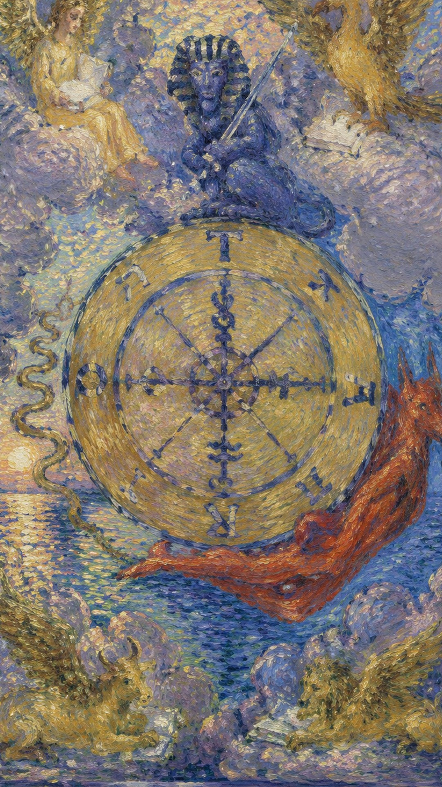
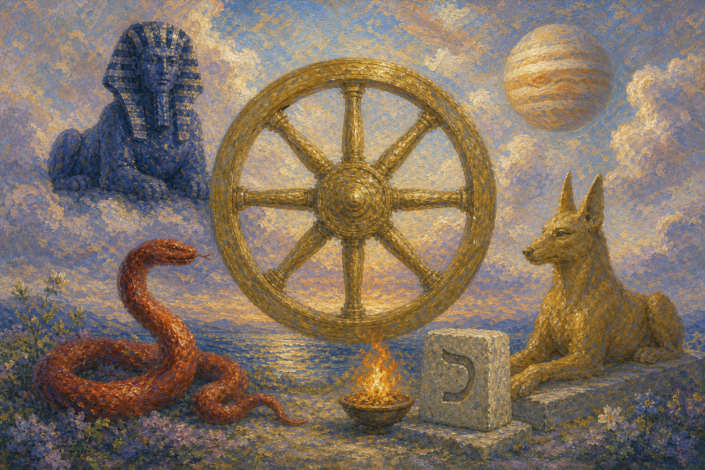
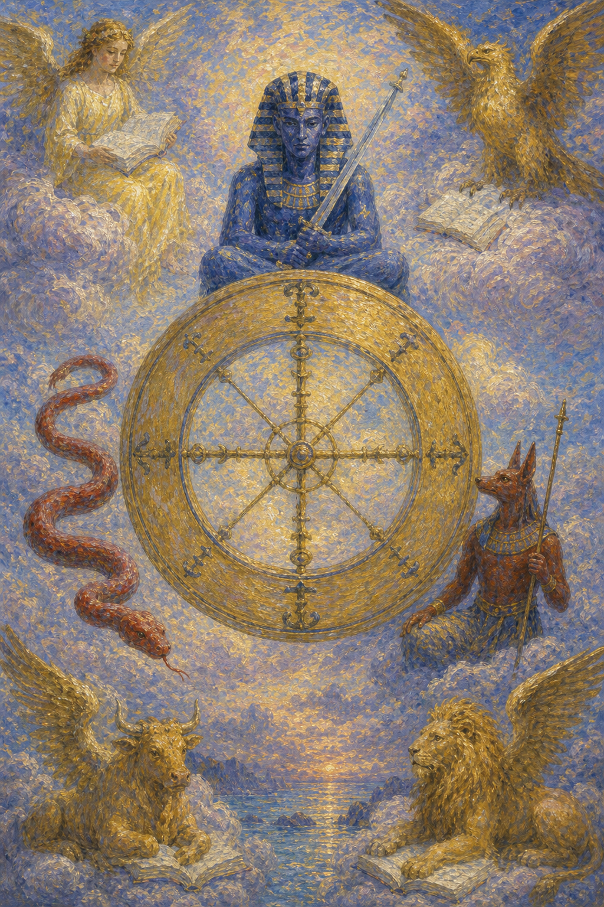
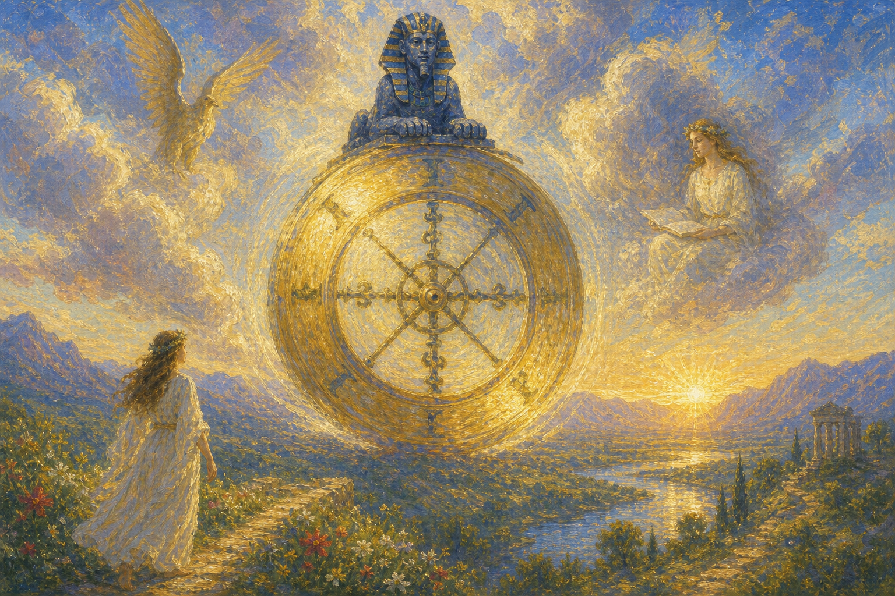
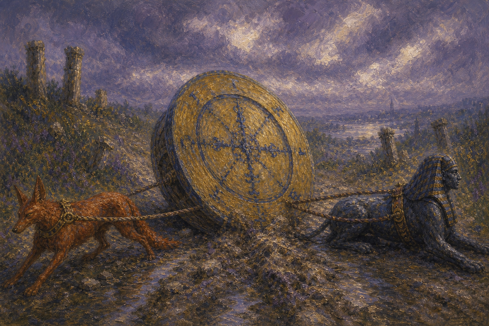
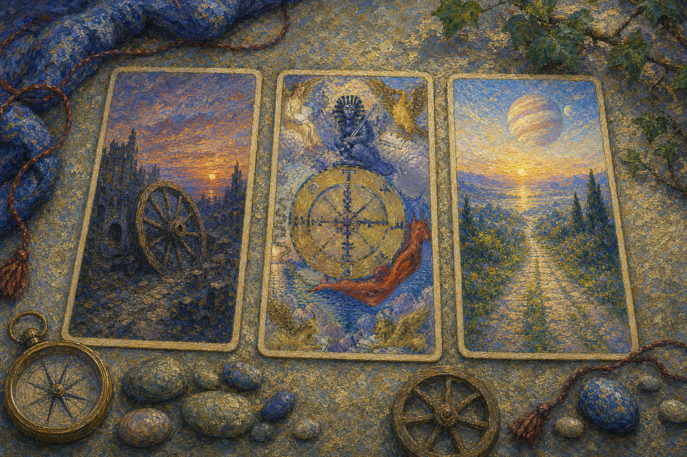

轮上的国王 · 佛图娜转轮
在许多版本的阿瑟王传奇中，阿瑟在最后战役的前夕，梦见一位富有而强大的国王坐在巨轮顶端；突然之间，命运女神佛图娜（Fortuna）转动了轮子，国王便被碾碎在轮子底下。清醒后的阿瑟明白：无论我们累积了多少俗世的权力，我们的命运永远操纵在上帝手中。

命运之轮缓缓转动，把人带过高处与低谷。它显示生命的周期，也显示时机在无声中更替。它别称宇宙，是大牌中少数几张没有人物的牌——无论当事人身处高潮还是低谷，主因都不在其自身。
当这张牌出现，你正面对循环、转机、命运与变化的课题。蔚蓝之轮由三层组成：最内层空无一物，象征万物的创造；中间一层刻有四个炼金符号，象征万物的形成；最外层物质世界之圈上写着 T、A、R、O 与上帝最古老的名字 YHVH——"塔罗之轮诉说哈托尔女神的律法"。
天空中悬着一架蔚蓝的命运之轮。它与大主教的三层冠冕相似，也由三层组成：最内层的圆空无一物，象征万物的创造；中间一层刻有四个炼金符号，代表西方物质的四要素，象征万物的形成；最外层是物质世界之圈，上、右、下、左四方分别是 T、A、R、O 四个字母——可拼读为 ROTA（轮）、ORAT（说）、TORA（律法）、ATOR（哈托尔女神），组成一句完整的话："塔罗之轮诉说哈托尔女神的律法"。物质世界圈的另外四个方位，则写着上帝最古老的名字 YHVH。
轮子周围有四圣兽、斯芬克斯与升降的神秘生物，象征宇宙循环。轮盘左侧是埃及神话中的邪恶之神赛特，蛇头朝下预示人生的沉沦；背负命运之轮的阿努比斯预示着背负命运的渴望；顶端的狮身人面像是智慧的象征，其手中的宝剑代表思考——面对人生，思考真谛或许正是获取顺境的方法。牌的四角分别是狮子、飞鹰、天使与神牛，对应四个固定星座与四元素：鹰为天蝎座属水、狮为狮子座属火、牛为金牛座属土、人为水瓶座属风。它们都在读书、汲取智慧，而翅膀赋予它们在变动中保持稳定的能力。这四个形象最早是巴比伦占星术中的四个固定星座，〈启示录〉第四章第七节也曾提到它们；早期的基督徒用它们象征四位福音圣徒，这正是它们手上都拿着书的原因，因此它们有时被称为"天堂的守护者"。民间由此还流传一句著名的夜间符咒："马太、马可、路加、约翰，保佑我睡觉的床。"而四个古神的名字——赛因代表老人，尼格拉斯代表鹰，纳盖尔代表狮子，沙玛什代表公牛——恰好与这张牌的图案吻合。
正因这张牌上没有人物，它说到底与个人无关——无论当事人此刻经历高潮还是低谷，主因都不在当事人本身，因此既无需洋洋自得，也不必自我否定，却也无法靠主动行动改变当下。命运之轮展现的是塔罗中少有的"不可抗力"：相信因果者可视之为业报的显现，不信者可视之为上帝掷骰子恰好掷到某个数字。由于它表现的是不可抗拒的天道轮回与自然节律，其影响极为长久。
好运与阻滞都只是轮上的一刻；清醒的人，会在变化中调整自己的姿态。
在许多版本的阿瑟王传奇中，阿瑟在最后战役的前夕，梦见一位富有而强大的国王坐在巨轮顶端；突然之间，命运女神佛图娜（Fortuna）转动了轮子，国王便被碾碎在轮子底下。清醒后的阿瑟明白：无论我们累积了多少俗世的权力，我们的命运永远操纵在上帝手中。
中世纪的意象起源于更古老的时代：佛图娜代表着「至上女神」，被毁灭的王则真有其人。每年仲冬，女祭司们以国王献祭，藉由模拟这一年的死亡在女神面前谦卑俯首，再选出一位新王，暗示她再一次从冬季之中创造出春天。
这轮子最初象征自然的奥秘，以及人类透过仪式性献祭参与这份奥秘的能力。请留意这张牌位于「皇后」牌的正下方——那正是伟大母神的象征。
牌角四生物的异象见于〈启示录〉第四章第七节。它们最早代表巴比伦占星术中的四个「固定」星座：狮子、天蝎、水瓶和金牛。早期的基督徒用它们象征四位福音圣徒——这就是它们手上都拿着书的原因；后来它们也被拿来象征古代和中世纪科学的四种基本元素。
蔚蓝之轮与大主教的三层冠冕同构：从空无一物的创造，到四要素的形成，再到物质世界之圈，三层递进。教皇把天上的律法带到人间，命运之轮则把这套秩序铸成一座会转动的宇宙时钟。
这张牌在牌序上位于「皇后」的正下方，而皇后正是伟大母神的象征——中世纪仲冬献祭与轮立新王的仪式，正对应着母神从冬季之中再创造春天的奥秘。


轮子周围有四圣兽、斯芬克斯与升降的神秘生物，象征宇宙循环。
表现当事人面对课题时的心理位置。
提示事件发生的精神气候与现实压力。
象征这张牌运作能量的工具或门槛。
显示意识清晰度、希望或阴影。
对应此阶段在人生旅程中的功课。
象征生命的周期性、命运与机遇的变化。
中心的图像代表权力与知识的结合。
四角的四个生物分别代表四福音书的作者，象征智慧、力量、美与速度。
旋转中的文字可读作"TORA"，意味着占星术或犹太人的律法。
与圣马可相应，象征勇气与力量。
象征耐心与牺牲。
代表圣马太，象征智力与知识。
代表圣约翰，象征高飞与灵视。
转轮边缘的符号象征炼金术与元素转化的过程。
转轮中心的同心圆象征目标与精神的集中。
四角的云象征超自然的力量与神秘。
可能代表赛特，古埃及的混沌与风暴之神。
可能象征智慧与知识。
金色象征高贵、繁荣与直觉的灵光。
数字 10 的核心是完成、循环、转折、因果与新的开始。因为 10 = 1 + 0，它既有"一个周期结束"的意味，也回到数字 1 的"重新出发、创造、独立"——它的表象能量是无限的可能性，取决于自身的环境和能量。
数字「10」暗示着「0」：「愚人」是「无物」，也没有人格，但就像数字「0」一样，他同时也是一切事物，因为他能直接感受到生命的能量。数字 1 独立自主、强势主动、热情直接；数字 0 则从无到无限大，不被约束和定义，是神性的数字。
10 把 1 的开端与 0 的无限相连，象征一个循环的完成，也孕育下一轮开始，提示命运正在换档。它代表独立、领导、开创与行动力强，但人生常伴随命运起伏与周期课题，需要学会顺应变化，而不是硬抗命运之轮。
十号课题：顺势而为，控制欲与占有欲不要太强——好运与阻滞都只是轮上的一刻，识时者顺其自然，在变化中调整姿态。
人事物不以个人意志为转移，既充满偶然性，又拥有必然性。轮子转到何处并非当事人所能左右，因此真正的智慧在于顺势识时、坦然接纳起落，而非执着于"我能否掌控结果"。

正位的命运之轮表示转机临近。好运来临，事情有所改变，命运正迎来转折——你可能交上好运、走向成功、得到喜讯，事情逐渐好转、机会随之而来，幸运之神正眷顾着你。机会可能来自外部环境、偶然相遇、政策变化或一段旧循环的自然结束。
转机，好运，变化，机遇，周期，顺势而为，把控时机，机会降临，转变期，意外的收获，当机立断，幸运降临，恢复原状，因果报应，善恶有报，生命周期，命运，天理，天命，转折点，运势上升
火 元素 · 转机、扩张与顺势识时
感情进入与循环、转机、命运、变化有关的阶段：它常意味着命运的邂逅、一见钟情或突然的告白，恋情进展顺利，可能迎来婚姻的机会，整体爱情运势上升。单身者会被相应气质的人或关系吸引；有伴侣者则需要围绕信任、边界、承诺、成长或真实需求进行更成熟的沟通。
这张牌提示你用更高层次的眼光处理问题，常带来好运、确定前途、意外的好消息与他人援助；考运佳、升职有望、学业进步，伴随有利的变动。它可能带来转机、考验、成果或暂停，但核心都是要求你顺势调整策略、把握机遇。
人际关系中适合看清彼此的位置，减少表面维持。命运之轮带来临时的收入、意外之财，以及意外的贵人相助；你善于随机应变、社交环境有利、人缘佳、朋友运好。财富方面要结合现实条件与长期影响，做出清醒安排。
健康生活上，命运之轮提示身心状态与当前心理课题相连。适合检查压力来源、作息习惯和身体信号，并以更稳定的方式照顾自己。身体也有自己的周期与节律，顺应它的起落、在状态好时积蓄、在低谷时休养，会比强行对抗更有益。
可能代表摄影、绘画等受爱好影响较大的事物，也意味着获得机会、立即行动。若问具体事件，正位多表示事情进入关键阶段。主动理解它的意义，会比单纯等待结果更有力量。

逆位的命运之轮表示这股能量受阻、失衡或被错误使用：运气不佳，事情可能发生逆转，遭遇命运的挫折，发展不顺、失去机会，命运的轮盘仿佛停止转动。此时最重要的是先看清自己是否正在抗拒这张牌所要求的功课。
停滞，坏运，抗拒变化，反复，失控感，时机不佳，判定错误，情绪低落，运气不佳，左右为难，一时的幸福，倒霉，霉运，拒绝改变，循环终止，循环断裂，运势下降，不顺，挫折，困难，不利的变化
火 元素 · 停滞、失衡与抗拒变化
感情中容易出现误解、逃避、控制、冷淡或旧模式重复，常表现为缺乏要领的交往、不稳定的恋情、激情冷却，乃至失恋、错失良机、感情破裂。关系若一直无法推进，需要回到双方真实需求。
事业学业上可能有拖延、阻滞、判断偏差或权责不清，常表现为竭尽全力却无功而返、效率低下、被同事或领导误解、希望落空、成绩低落、工作易出错。先修正方向、补足信息，再决定下一步。
人际方面要小心投射和不公平交换，逆位常表现为超支、上当受骗、误解较多、人际关系不稳定，竭尽全力却往往白忙一场。财富方面适合回到理性评估与长期规划，避免被恐惧推着走。
健康上，逆位常提示压力累积、情绪压抑、作息失衡或身体警讯被忽略。当人抗拒变化、被失控感裹挟，情绪低落与节律紊乱便容易显现。建议减少极端做法，接纳无法掌控之事，重新建立可持续的生活节奏。
可能代表暂时的好运、爽约，对事物感到乏味，或生活单一无趣。事情可能延迟、反复或暴露隐藏问题。先修正模式，再谈结果。

当命运之轮出现在三牌阵中，它象征的是能量在时间维度上的显现。点击下方卡牌揭示隐秘启示。
过去的行动与决定开始显现其结果，无论好坏，都是生活循环与变化的一部分。
正是转折点，命运之轮正为你展开新的篇章，你可能感到事业或个人生活的动态变化。
未来将有更多机遇与挑战，重要的是保持开放与适应性，以充分利用即将到来的新局面。